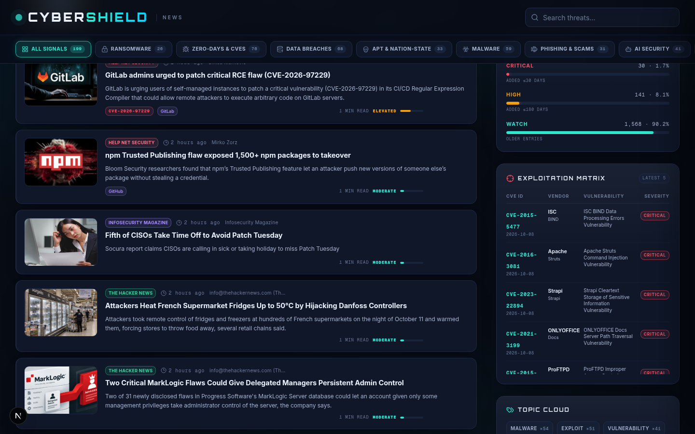

CISA KEV MEMBERSHIP — listed as actively exploited? instant boost.
CVSS & EXPLOIT AGE — technical severity plus how fresh the KEV entry is.
SOURCE RELIABILITY — 19 vetted research streams, weighted by track record.
RECENCY — the wall re-scores as the stream moves, so ranks never go stale.
